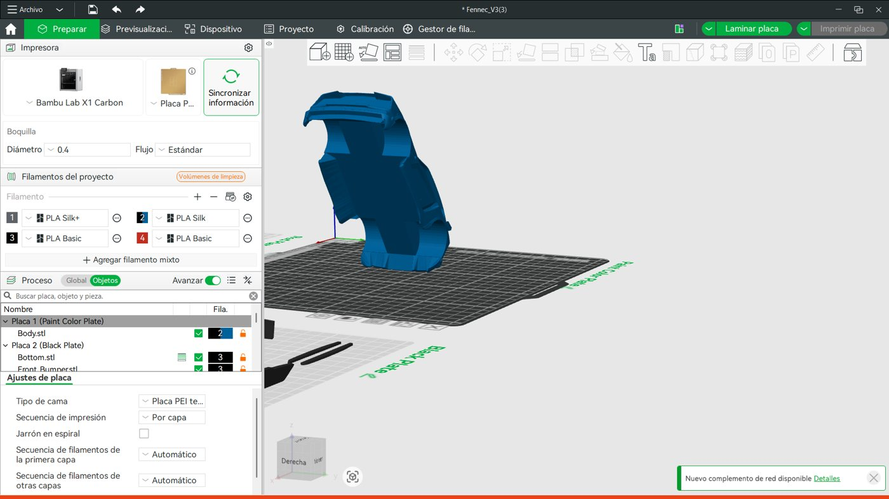
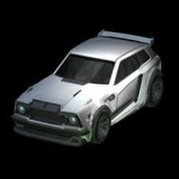

Choques
El sensor ultrasónico del frente bloquea el avance cuando hay algo a menos de 10 cm. El infrarrojo de atrás bloquea la marcha atrás. Funciona igual si manejas tú o si va solo.
Construimos un auto con forma de Fennec que se maneja con un control inalámbrico o se maneja solo, usando sensores para detectar obstáculos y luces para señalizar lo que hace. Es nuestro proyecto de la materia de Sensores.
Es una simulación de cómo decide el auto. Haz clic en la pista y usa las flechas o WASD. Arrastra los bloques para cambiar los obstáculos.
Reglas iguales a las del auto: frena a 10 cm de un obstáculo al frente, no retrocede si hay algo detrás y, en automático, empieza a esquivar a los 15 cm.
Un auto, dos formas de manejarlo y varios sensores que cuidan que no choque.
Diseñamos y construimos un auto a escala que funciona de dos maneras: manual, con un control remoto, y autónoma, usando sensores y un sistema de control electrónico.
El auto lleva una ESP32 que procesa lo que miden los sensores y acciona los motores, el servo y las luces. El control lleva una segunda ESP32 que lee los joysticks y los botones y manda las órdenes por radio con ESP-NOW, un protocolo que une ESP32 entre sí y envía datos pequeños muy rápido, sin necesidad de WiFi ni de Bluetooth.
Hay detección de obstáculos tanto en el manejo manual como en el automático. Y como objetivo del proyecto queda sumar un sistema de detección de vuelcos con un mecanismo que ayude al auto a volver a su posición.
Buscamos juntar en un solo dispositivo lo que aprendimos de electrónica, programación, mecánica y automatización.
Lo que el auto soluciona, y lo que nos falló mientras lo construíamos.
El sensor ultrasónico del frente bloquea el avance cuando hay algo a menos de 10 cm. El infrarrojo de atrás bloquea la marcha atrás. Funciona igual si manejas tú o si va solo.
En modo automático el auto avanza, detecta el obstáculo, retrocede girando y sigue por otro camino, sin que nadie toque el control.
Las luces cuentan lo que pasa: rojas si está quieto, frena, va en reversa o hay un obstáculo; amarillas intermitentes cuando gira; blancas como faros.
Si el auto deja de recibir señal del control por más de medio segundo, detiene los motores.
Qué pasaba: el módulo con fotorresistencia marcaba valores cerca de 0 y saltaba sin sentido, aunque le apuntáramos con una linterna. Las luces blancas quedaban siempre encendidas.
Causa: el módulo estaba dañado; ni cambiando los cables volvió a dar lecturas estables.
Solución: sacamos el sensor y las luces blancas se encienden y apagan con un botón del control.
Qué pasaba: probamos un Arduino Mega con un módulo Bluetooth hablando con la ESP32 del control. La ESP32 veía el módulo (aparecía su dirección y con buena señal) pero la conexión fallaba una y otra vez.
Causa: no llegamos a saberla con seguridad. Probamos la clave, la velocidad y dos formas de conectar sin éxito.
Solución: volvimos a una ESP32 en el auto y pasamos a ESP-NOW. Se conectaron al instante y pudimos prender y apagar un LED desde un botón de la otra placa.
Qué pasaba: el servo respondía, pero el motor no se movía.
Causa: el GND de la ESP32 no estaba unido con el GND de la fuente de los motores, así que el L293D no entendía las señales.
Solución: unir todos los GND en un punto común. Es una regla del auto: todo comparte tierra.
Qué pasaba: al iniciar, cualquier joystick mandaba -100 y el motor arrancaba a fondo sin bajar la velocidad.
Causa: el cable de alimentación (VCC) del joystick estaba mal conectado, y la ESP32 leía 0.
Solución: alimentarlo con 3.3 V y mostrar en el monitor serie la lectura cruda para comprobar que en reposo marca cerca de 2000.
Qué pasaba: apenas encendía ya "veía" algo, y al mover el tornillo el comportamiento cambiaba.
Causa: la sensibilidad se regula con un potenciómetro, y el módulo (un HW-201, hermano del FC-51) da 0 cuando detecta, al revés de lo que supusimos al principio.
Solución: invertir la lógica en el código y ajustar el tornillo hasta que detecte la mano a unos 5 cm.
Qué pasaba: los modelos 3D del Fennec que bajamos eran macizos, sin lugar para la electrónica.
Causa: están pensados para exhibir, no para llevar piezas adentro.
Solución: vaciarlo en el programa de la impresora con una parte negativa, o usar un modelo que ya venga como carcasa hueca y un fondo aparte. Mira la sección de la carcasa.
Qué pasaba: con 5 V los motores de 6 V giran lentos.
Causa: el L293D "se come" entre 1,4 y 2,6 V según la carga.
Solución: alimentar el L293D con las dos baterías 18650 en serie (7,4 V) y dejar un regulador de 5 V solo para la electrónica.
Qué pasaba: en la prueba, sin capacitores a mano, existe el riesgo de que la ESP32 se reinicie o el motor vaya a tirones.
Causa: los motores generan picos de corriente y ruido eléctrico.
Solución: un capacitor de 100 nF en cada motor y uno electrolítico en la alimentación. Mientras tanto, un arranque suave en el código hace que la velocidad suba de a poco.
Una ESP32 manda, la otra obedece, y los sensores tienen la última palabra.
El joystick 1 mueve los dos motores hacia adelante o hacia atrás, y la velocidad depende de cuánto lo inclines. El joystick 2 gira el servo, que mueve el eje delantero hacia la izquierda o la derecha.
Aunque tú pidas avanzar, si el sensor del frente detecta algo a menos de 10 cm el auto se detiene y no avanza hasta que cambies de dirección. Lo mismo pasa hacia atrás con el sensor infrarrojo.
Con el botón de modo automático el auto maneja solo. Avanza en línea recta, y cuando el ultrasonido marca menos de 15 cm hace tres cosas en orden:
Mientras tanto, las luces señalizan hacia dónde va. Puedes ver esta lógica funcionando en el simulador de arriba.
Todo lo que lleva el auto y el control. Los botones de compra abren una búsqueda en Mercado Libre; revisa el vendedor y el precio antes de comprar.
| Sensor | Por qué lo elegimos | Alternativas |
|---|---|---|
| HC-SR04 (ultrasónico), fijo sobre el capó, mirando al frente | Es barato, mide de 2 cm a 4 m y hay mucho código y tutoriales. Al ir fijo, sin servo, es simple y no ocupa espacio dentro. Sirve de sensor frontal para frenar (bloquea el avance a 10 cm) y para esquivar en el modo automático. Se alimenta a 5 V, y como su pin ECHO sale a 5 V, lleva un divisor de voltaje para la ESP32. | VL53L0X (láser, I2C, 3.3 V), HC-SR04P (3.3 V), JSN-SR04T (sonda separada) |
| HW-201 (infrarrojo de obstáculos), en la parte trasera | Su alcance corto, regulable con el potenciómetro (en nuestras pruebas detecta a unos 5 cm), alcanza para la marcha atrás, que es lenta. Tiene salida digital simple (da 0 y enciende su LED al detectar) y se alimenta a 3.3 V, sin necesitar divisor. Se usa para bloquear la reversa. Puede fallar con luz solar intensa y no detecta bien objetos negros. | FC-51 (prácticamente igual), KY-032, Sharp GP2Y0A21 (analógico, 10 a 80 cm, mide distancia), un segundo HC-SR04 |
| KY-023 (joystick analógico), en el control | Da 2 ejes analógicos y un pulsador, y se lee directo con la ESP32 (se alimenta a 3.3 V). Usamos dos: uno para el motor (adelante y atrás) y otro para el servo (dirección). | MPU6050 (manejo por inclinación), botones |
| Pulsadores (KY-004 o comunes), en el control | Uno enciende las luces delanteras y otro activa el modo automático. Se leen con INPUT_PULLUP y un antirrebote por software que ignora pulsaciones durante 250 ms tras cada una. | Un pulsador común, o el botón del propio joystick |
| Acondicionador | Dónde va | Qué usamos |
|---|---|---|
| Divisor de voltaje | Pin ECHO del HC-SR04 (baja 5 V a unos 3.3 V) | 1 kΩ + 2 kΩ |
| Capacitor cerámico 100 nF | Entre los terminales de cada motor | 1 por motor |
| Resistencia en serie | Cada LED | 220 Ω en los rojos y amarillos, 150 Ω en los blancos |
| Resistencia de base | Entre la ESP32 y el transistor de los faros | 1 kΩ, 1 unidad |
| Filtro y antirrebote por software | Joysticks y botones | Sin componentes |
Las que usamos para entender los sensores. Haz clic en una para verla grande.
Cuánto costó pensar el auto, y en qué se va la plata.
| Componente | Cant. | Precio |
|---|
Es el presupuesto original. Después hubo cambios, como las baterías 18650 en lugar de la de 9 V, el transistor de los faros y los capacitores, que todavía no figuran con precio en la tabla.
Qué va a qué pin, en cada ESP32.
Un auto de Rocket League, impreso en 3D y hueco por dentro.

Elegimos el Fennec, un auto del videojuego Rocket League. Usamos un modelo hecho por fans, pensado para imprimir en 3D, y lo agrandamos para que entre la electrónica: queda de unos 200 × 100 mm.

El servo gira un eje delantero con las dos ruedas, sujeto por un tornillo en el centro. Así el peso lo lleva el tornillo y el servo solo lo hace girar. Los dos motores N20 van atrás, uno por rueda.
El Fennec y Rocket League pertenecen a sus dueños. Usamos el modelo solo para este trabajo escolar.
Cómo fue cambiando el proyecto.
Decidimos usar dos motorreductores TT para tracción trasera y poner un sensor fotosensible para encender luces blancas en la oscuridad, como faros. También elegimos el modelo del auto: el Fennec de Rocket League.
Cambiamos los motorreductores TT por micromotores N20, que son más rápidos y más fáciles de conectar. También cambiamos la ESP32 del auto por un Arduino Mega, para conectar los sensores con más facilidad, que se comunicaría con la ESP32 del joystick por Bluetooth. Quitamos la fotorresistencia, que no mostró señal de funcionar, y la reemplazamos por un botón que enciende y apaga los LEDs.
El módulo Bluetooth del Mega no conectó con la ESP32, así que volvimos a una ESP32 en el auto. Al probar ESP-NOW entre las dos placas se conectaron rápido y sin errores: pudimos prender y apagar un LED con un botón, una placa emisora y la otra receptora.
Probamos los dos motores con un joystick, descubrimos que faltaba unir los GND, ajustamos el sensor infrarrojo para que detecte la mano a unos 5 cm, definimos las baterías 18650 y el regulador de 5 V, y preparamos la carcasa hueca del Fennec en 3D.